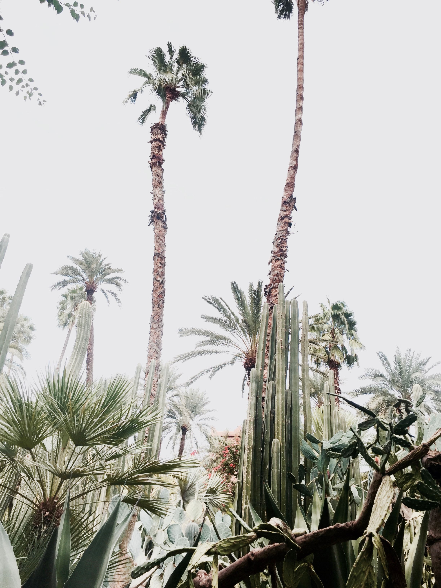

I D E N T I T É V I S U E L L E
Food Truck "Première Heure"
Voici le résultat d'un travail d'élaboration d'un food truck. L'objectif était de créer son identité, de son concept jusqu'à la création de goodies.
T Y P O G R A P H I E
Affiche typographique


Ceci est une affiche typographique reprenant un extrait du Meilleur des Mondes d'Aldous Huxley.
I L L U S T R A T I O N
Desperados
Ceci est une linogravure dédiée à illustrer une bouteille Desperados.
E D I T I O N
A la manière de Carson
Ceci est un travail d'Edition reprenant les compétences graphique de David Carson. Le mot à représenter était la danse.
P A C K A G I N G
JAÏLA


Ceci est un travail de packaging visant à réaliser une nouvelle gamme de visuels pour des produits cosmétiques orientaux de luxe.